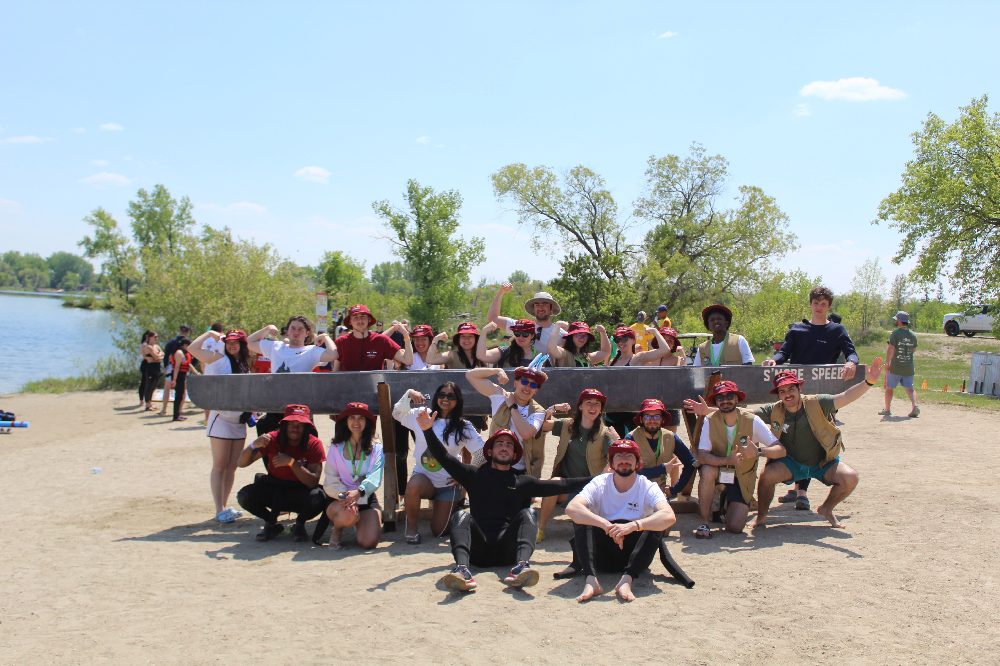
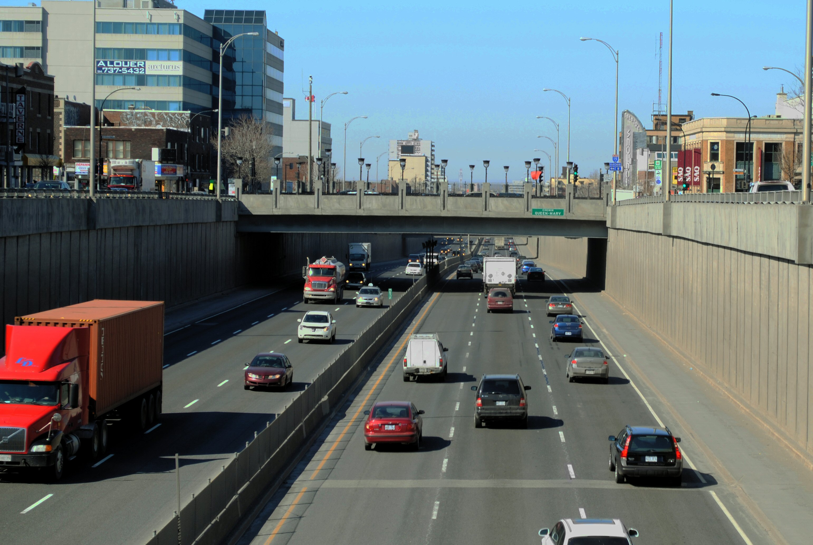
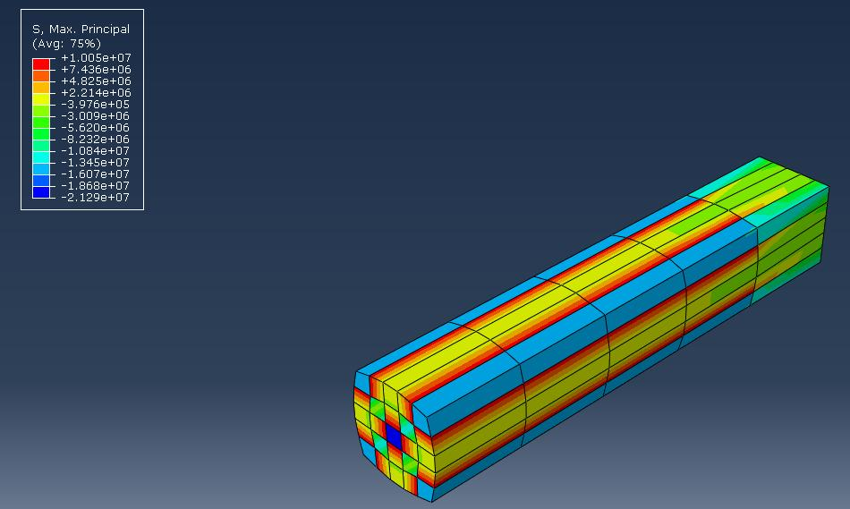
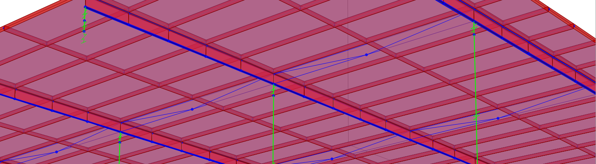
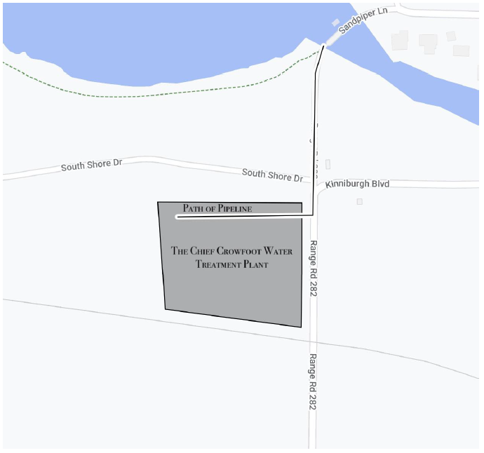
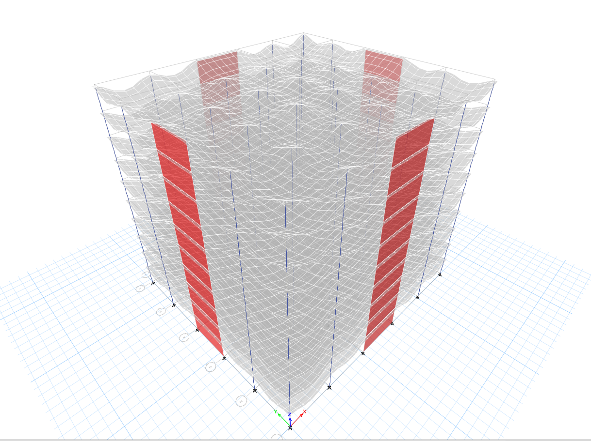

Projets

Après sept ans d’inactivité, j’ai relancé l’équipe de canoë de béton de Concordia. Guidée par les valeurs de curiosité, de courage, d’humilité et de joie, notre équipe a conçu, construit, transporté et pagayé un canoë de 6 mètres contre 20 autres universités canadiennes.
Plus d’info →
Le projet combine génie structural, transport, durabilité et design urbain pour transformer une infrastructure autoroutière existante en une occasion de reconnecter le quartier.
Plus d’info →
Projet réalisé dans le cadre de mon cours de génie géotechnique avancé, portant sur la stabilité des pentes.
Voir le rapport technique →
Utilisation de CSI bridge pour modéliser un pont mixte.

Concept pour une nouvelle usine de traitement d’eau à Chestermere, en Alberta.

Un immeuble de bureaux de dix étages modélisé dans ETABS et SAFE : cheminement des charges latérales et gravitaires, disposition des murs de refend, déformée sous charge et conception des dalles.